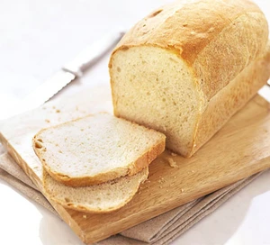

Loaf of White Bread

Look no further for the BEST and simplest homemade Bread recipe made with just six simple pantry ingredients!
It's the perfect white bread for sandwiches and it freezes well too!
Ingredients
- Warm Water
- 7g Active Dry Yeast
- Salt
- Oil
- Bread Flour
Directions
- Proof the yeast: In a large bowl or stand mixer add the yeast, water and a pinch of the sugar or honey.
Allow to rest for 5-10 minutes until foaming and bubbly.
-
Prepare the dough: Add remaining sugar or honey, salt, oil, and 3 cups of flour.
Mix to combine
-
Knead the dough: Mix the dough for 5 minutes on medium speed
-
leave to rise, once risen seperate into portions and leave for a second rise
-
Bake: Adjust oven racks to lower/middle position. Preheat the oven to 350 F.
Bake bread for about 30-33 minutes, or until golden brown on top
-----------------------------------------------------------------------